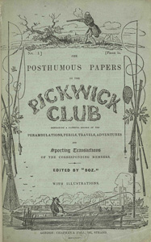

Written for publication as a serial, The Pickwick Papers is a sequence of loosely related adventures. The action is given as occurring 1827-8, though critics have noted some seeming anachronisms. It has been stated that Dickens satirized the case of George Norton suing Lord Melbourne in The Pickwick Papers. The novel's main character, Samuel Pickwick, Esquire, is a kind and wealthy old gentleman, the founder and perpetual president of the Pickwick Club. To extend his researches into the quaint and curious phenomena of life, he suggests that he and three other "Pickwickians" (Mr Nathaniel Winkle, Mr Augustus Snodgrass and Mr Tracy Tupman) should make journeys to places remote from London and report on their findings to the other members of the club. Their travels throughout the English countryside by coach provide the chief theme of the novel. A distinctive and valuable feature of the work is the generally accurate description of the old coaching inns of England. (One of the main families running the Bristol to Bath coaches at the time was started by Eleazer Pickwick).
Its main literary value and appeal is formed by its numerous memorable characters. Each character in The Pickwick Papers, as in many other Dickens novels, is drawn comically, often with exaggerated personality traits. Alfred Jingle, who joins the cast in chapter two, provides an aura of comic villainy, with his devious tricks repeatedly landing the Pickwickians into trouble. These include a nearly successful attempted elopement with the spinster Rachael Wardle of Dingley Dell Manor and misadventures with Dr Slammer and others.
Further humour is provided when the comic cockney Sam Weller makes his advent in Chapter 10 of the novel. First seen working at the White Hart Inn in The Borough, Weller is taken on by Mr Pickwick as a personal servant and companion on his travels and provides his own oblique ongoing narrative on the proceedings. The relationship between the idealistic and unworldly Pickwick and the astute cockney Weller has been likened to that between Don Quixote and Sancho Panza.
Through humour Dickens is able to capture quintessential aspects of English life in the mid-nineteenth century that a more sober approach would miss. Perhaps the popularity of this novel was due in part to the fact that the readers of the time were able to truly see themselves, and could accept themselves because of Dickens's skillful use of humour.
Other notable adventures include Mr Pickwick's attempts to defend a lawsuit brought by his landlady, Mrs Bardell, who (through an apparent misunderstanding on her part) is suing him for breach of promise. Another is Mr Pickwick's incarceration at Fleet Prison for his stubborn refusal to pay the compensation to her - because he doesn't want to give a penny to Mrs Bardell's lawyers, the unscrupulous firm of Messrs. Dodson and Fogg. The generally humorous tone is here briefly replaced by biting social satire (including satire of the legal establishment). This foreshadows major themes in Dickens's later books.
Mr Pickwick, Sam Weller and Weller Senior also appear in Dickens's serial, Master Humphrey's Clock.
According to Retrospect Opera, there was an early attempt at a theatrical adaptation with songs by W.T. Moncrieff and entitled Samuel Weller, or, The Pickwickians, in 1837. This was followed in 1871 by John Hollingshead's stage play Bardell versus Pickwick. The first successful musical was Pickwick (sometimes Pickwick, A Dramatic Cantata) by Sir Francis Burnand and Edward Solomon and premiered at the Comedy Theatre on 7 February 1889.
1913 - The Adventures of Mr. Pickwick, a silent short film starring John Bunny as Samuel Pickwick and H. P. Owen as Sam Weller.
1921 - The Adventures of Mr. Pickwick, silent, lost, starring Frederick Volpe and Hubert Woodward
1936 - Pickwick, an opera by Albert Coates with The British Music Drama Opera Company, under the direction of Vladimir Rosing, which was screened on 13 November 1936 (less than two weeks after the BBC began regular scheduled television broadcasts) as the world's first televised opera.
1938 - The Pickwick Papers, Orson Welles' Mercury Theater on the Air radio adaptation (20 November 1938).
1952 - The Pickwick Papers, film starring James Hayter, Nigel Patrick, Alexander Gauge and Harry Fowler (the first sound film version and, to this day, the only sound version of the story released to cinemas).
1963 - Pickwick, a musical version by Cyril Ornadel, Wolf Mankowitz and Leslie Bricusse, which premiered in Manchester before transferring to the London West End. It originally starred Harry Secombe (who was later cast as Mr Bumble in the film version of Oliver!). Although it was a major success in London, running for 694 performances, Pickwick failed in the United States when it opened on Broadway in 1965.
1968 - Il Circolo Pickwick, a 6-part Italian TV version directed by Ugo Gregoretti and featuring Mario Pisu.
1969 - Pickwick, BBC filmed version of the musical. Both versions featured the song "If I Ruled the World", which became a hit for Secombe, and other singers such as Tony Bennett and Sammy Davis Jr..
1985 - The Pickwick Papers, an Australian animated adaptation directed by Warwick Gilbert.
1985 - The Pickwick Papers, a 12-part BBC 350-minute miniseries starring Nigel Stock, Alan Parnaby, Clive Swift and Patrick Malahide.
Part of The Pickwick Papers were featured in Charles Dickens' Ghost Stories, a 60-minute animation made by Emerald City Films (1987). These included The Ghost in the Wardrobe, The Mail Coach Ghosts, and The Goblin and the Gravedigger.
Stephen Jarvis's novel Death and Mr Pickwick (2014) is in part a literary thriller, examining in forensic detail the question of whether the idea, character and physiognomy of Samuel Pickwick originated with Dickens, or with the original illustrator and instigator of the project, Robert Seymour. The conclusion of the narrator is that the accepted version of events given by Dickens and the publisher Edward Chapman is untrue.